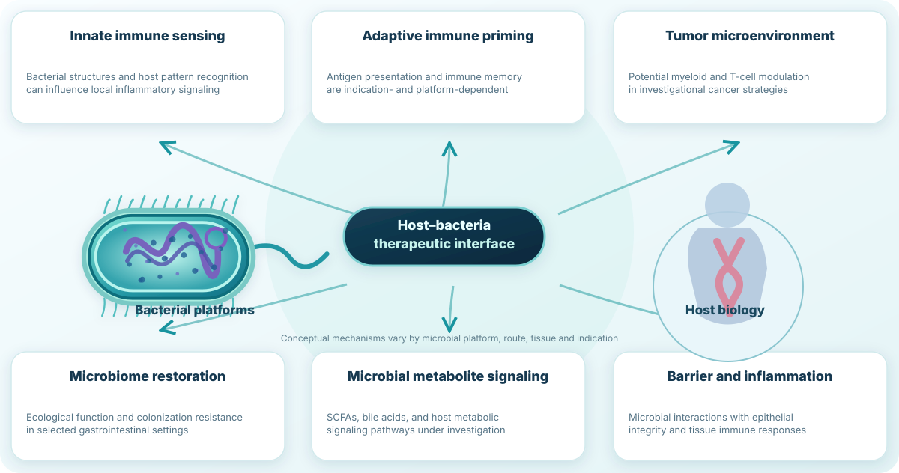
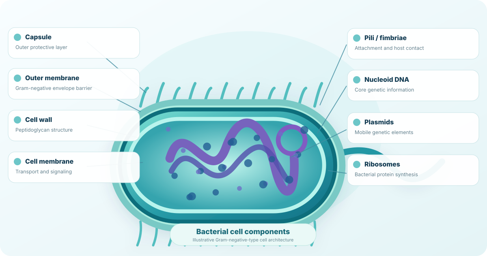
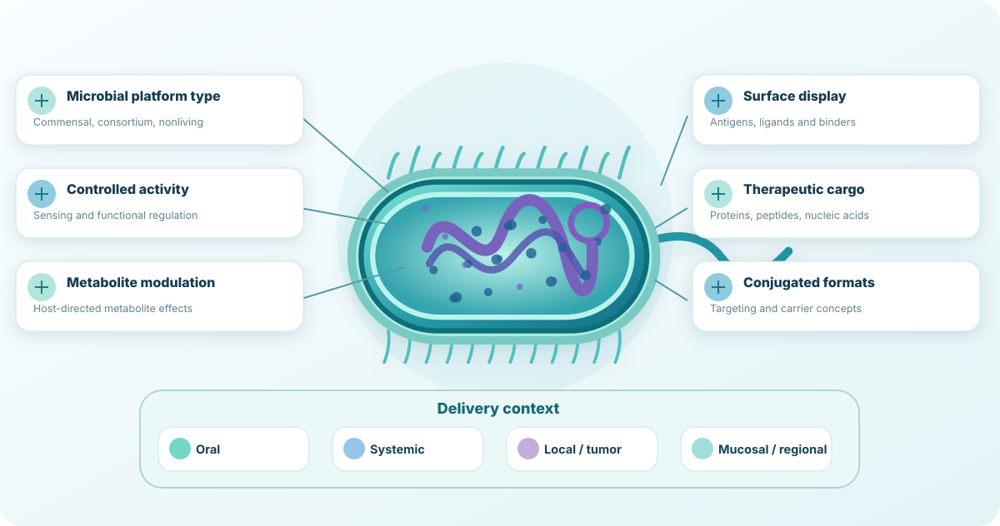

INTERACTIVE MECHANISM MAPEvidence tier
Select a therapeutic pathway
Select any pathway node to view its evidence-qualified interpretation.
Conceptual scientific association; arrows do not establish causality or clinical efficacy.
An evidence-linked research platform to explore bacterial mechanisms, therapeutic platforms, host interactions and translational research—within one connected workspace.
See how bacterial platforms may interact with the immune system, tumor environments, microbial ecosystems, and metabolic signaling.

Explore key bacterial features and the research concepts they inform without leaving this page.

Bacterial Cell ArchitectureCell envelope, surface components, nucleoid DNA, plasmids, ribosomes and vesicles.Explore Cell Architecture
Therapeutic Design ElementsMicrobial platform, engineered functions, cargo formats, targeting concepts and delivery contexts.Explore Design ElementsStart with a disease. Explore an interactive mechanism and examine its supporting literature, clinical trial records and patent-search leads. Select AI specialists from the workspace menu when deeper analysis is needed.
Explore possible relationships among microbial platform, engineering concept, cargo, conjugation, and delivery route. The diagram generates testable hypotheses, not efficacy predictions.
Choose a disease or therapy, then click any pathway node to examine its evidence. Source links and clinical limitations appear beside the figure.
The selected disease and intervention, expanded mechanisms, source records, and research context—right here on the homepage.
Explore therapeutic approaches, investigate biological mechanisms, examine source evidence, and generate research assessments from a unified interface.
Navigate diseases, mechanisms, research sources and clinical evidence in one interactive dashboard.
Disease → therapeutic approach → mechanism → biomarker → evidence → trials → patent-search leads
Curated sources are linked to the claim. Saved discoveries are title matches, not confirmation of a pathway.
Related platforms for diligence; these are not necessarily direct evidence for the selected claim.
No automated claim analysis, jurisdiction review or FTO determination is performed.
Structured evidence synthesis · linked mechanisms · gap analysis · saved briefs · optional live PubMed lookup
Run an analysis to view supporting pathways.
Interactive, source-linked research assistant · v0.3 local retrieval engine
Ask about a company, bacterial modality, oncology or cardiometabolic pathway, evidence gaps, or IP/safety diligence. I’ll retrieve matching records from the embedded knowledge base and cite their public sources.
Selected high-impact publications, official regulatory reports, and patent leads. One evidence base connected to the Research Intelligence Agent.
For new literature, the production release will integrate PubMed and clinical trial APIs. This offline edition does not perform live searches or update patent legal status.
Simplified scientific pathway figures with treatment context, evidence strength, biomarkers and primary source links.
Start with your scientific question, not a preselected hypothesis. Explore research mechanisms, available source records and new literature leads.
The question drives the answer. Curated scientific explanations are shown only for supported topics; other queries offer external publication searches. This is not a generative AI model or clinical assessment.
For example, which microbial metabolites influence inflammation? You will see a topic-specific overview, mechanism context and linked publications.
Share hypotheses, compare published evidence, and discuss emerging bacterial therapeutic approaches across research areas.
A community space for research questions, mechanisms, therapeutic concepts, translational challenges, and thoughtful scientific debate. New contributions appear here from the public GitHub discussion feed.
Community conversations
Loading public ideas hosted on GitHub.
Editorial prompts to help spark conversation; these are not published community posts.
Consider tumor immune context, exposure, and clinically relevant biomarkers.
Compare ecological functions, host factors and indication-specific evidence.
Discuss oral, local and systemic exposure, targeting and safety tradeoffs.
Searchable public-disclosure snapshot. Open any record for provenance and diligence notes.
These are research themes, not validated bacterial therapies for cardiometabolic indications.
Public status is a dated snapshot. For investment or clinical decisions, re-check source records.
| Platform | Modality | Indication | Reported stage | Evidence | Source |
|---|
Notes stay in this browser only. Use Export JSON to back up or transfer them. Scientific and patent conclusions require independent review.
Company-level and program-level findings from dated public documents, with verified source links.
Loading public research profiles…
Research profiles are curated snapshots rather than live company databases. A program's status is based on the dated document shown; missing news does not imply discontinuation. Patent leads are not freedom-to-operate conclusions.
Regulator filings and trial records → peer-reviewed clinical evidence → mechanistic/preclinical evidence → company disclosures → hypotheses. Company reporting is not independent validation.
Identify independent inventive claims and dated prior art. A new combination of known concepts is not automatically patentable.
Review active claims, territories, expiration, ownership and license terms with qualified counsel. A patent search link is not an FTO opinion.
Distinguish live from nonliving products; assess shedding, immunocompromised populations, systemic inflammatory effects, ecological risks and CMC controls.
Separate safety, activity, efficacy, regulatory acceptance, and commercial availability. Indication-specific benefit-risk evidence is essential.
Maintain source URLs, publication dates, reviewer notes, versioning, citation checks and provenance before adding machine-learning predictions.
| Record | Date / status | Public source | Patent search |
|---|
Mechanism diagrams, evidence labels, unified dropdown navigation, comparison atlas, local retrieval agent, source-linked responses, report export and saved research assessments.
Normalized trial IDs, source DOI/PMID, patent families, citation verification dates, reviewer workflow and searchable evidence records.
Public omics data ingestion, disease/target evidence graphs, reproducible ranking with uncertainty and safety gates.
Backend API, accounts and permissions, database, secure project isolation, change history and automated tests.
Benchmark against published cases, independent methodological review, curated clinical outcomes and validation reports.
Institutional licensing controls, privacy controls, legal review, monitoring and reproducible reports.